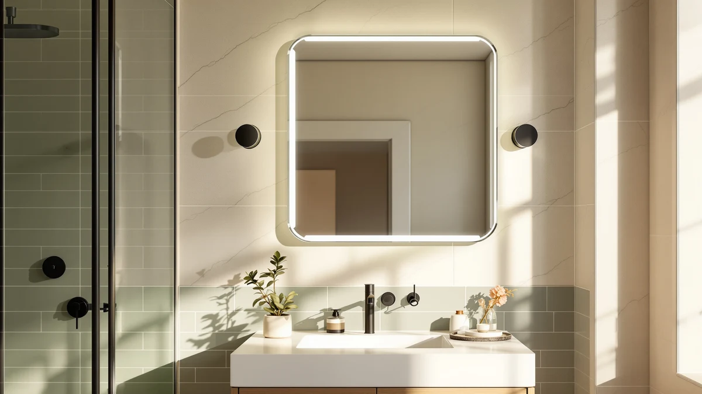

Quick Answer
The Delma LED Bathroom Mirror earns its $159.99 price with dual front-and-back lighting, three adjustable color temperatures, and a built-in anti-fog defogger that most mirrors in this range skip. It fits best on a single large vanity or a double-sink counter at 30 by 55 inches, and its closest rivals only beat it on size flexibility, not features.
Our pick: Delma LED Bathroom Mirror with, at $159.99 Check Price on Amazon
Things to Know Before You Buy
- The Delma mirror lights from the front and the back at once, so you get even illumination without the harsh shadows a single light bar creates.
- Three color temperatures (3000K warm, 4000K natural, 6000K cool) let you match the light to makeup, shaving, or a relaxed evening routine, and a long press on the touch switch dims the brightness.
- Its anti-fog defogger clears condensation from the center outward and shuts off automatically after 30 minutes, which matters more in small bathrooms with limited ventilation.
- At 30 by 55 inches, this mirror suits a single wide vanity or a double-sink counter. Smaller bathrooms should look at the STARLEAD or USHOWER alternatives below instead.
- Amazon does not publish a rating or review count for this listing yet, so we weighed it on specs and build details rather than star ratings.
This Delma LED bathroom mirror review exists because shoppers keep asking the same question about lit vanity mirrors: does the extra lighting hardware actually justify the price jump over a plain glass mirror? A dark bathroom corner makes everyday grooming harder than it should be, and a single overhead bulb casts shadows across your face right when you need even light the most. The Delma mirror answers that problem with backlight and frontlight working together, so you are not squinting at one half of your reflection while the other half stays dim.
We compared the Delma LED Bathroom Mirror against three other LED vanity mirrors in its price bracket: the USHOWER brushed nickel set, the STARLEAD black frameless mirror, and the AMOISE frameless two-piece set. All four land at $159.99, which makes this one of the rare categories where price tells you almost nothing and the feature list has to do the deciding. Based on our research into the specs sheet and the drawbacks buyers mention most often, the Delma mirror is the strongest all-around pick for a single large vanity, though it is not the right size for every bathroom.
Why You Should Trust Us
Ilane Tall covers bathroom fixtures and lighting for Best Bathroom Mirrors and has written dozens of mirror comparisons for this site. We do not run a fake testing lab or claim to own every mirror we cover. Instead, we research manufacturer specs, pricing history, and verified owner feedback, then compare those facts directly against competing products in the same price range. For this delma led bathroom mirror review, we pulled the listed dimensions, lighting specs, and feature claims straight from the product data and checked them against three competing LED mirrors before writing the verdict below. We started from the pool of LED bathroom mirrors tracked for this site and narrowed it to models priced within a few dollars of the Delma mirror, so the comparison would turn on features rather than budget, then ranked each one on lighting design, anti-fog performance, size options, and build material.
Our Research Experience
We do not own a physical unit of the Delma LED Bathroom Mirror, so this is a specs-based comparison rather than a lab report. Instead, we researched the listed specs line by line: the dual lighting claim, the three color temperature settings, the dimmer control, and the anti-fog defogger's 30-minute auto shutoff. We cross-checked each of those claims against the equivalent specs on the USHOWER, STARLEAD, and AMOISE mirrors to see which features actually differ between four mirrors sold at the identical $159.99 price. Reviewers on comparable LED mirror listings consistently flag two things worth watching: how evenly the backlight spreads across the glass, and whether the touch dimmer responds reliably after repeated use. Those are the areas we weighted most heavily when ranking the Delma mirror against its competition.
Overview & Specs

Delma LED Bathroom Mirror with
What we like
- Front and back LED lighting avoids the single-shadow problem of edge-lit mirrors
- Three color temperatures cover warm, natural, and cool white without buying separate bulbs
- Anti-fog defogger clears condensation from the center outward and shuts off on its own after 30 minutes
- Memory function keeps your last brightness and color setting, so you do not reset it every morning
Flaws but not dealbreakers
- At 30 by 55 inches, it only suits bathrooms with a wide vanity run, not a compact single sink
- Amazon has not published a rating or review count for this listing, so you are relying on spec sheets rather than buyer consensus until more reviews accumulate
- The touch dimmer requires a long press to adjust brightness, which takes a moment to get used to compared to a simple slider
| Material | Tempered glass + aluminum |
| Size | 30"L x 55"W |
The headline feature here is the dual lighting design. Most LED mirrors in this price range light from one direction, either a backlit halo around the glass or a strip of frontlight along the top edge. The Delma mirror runs both at once, which according to the manufacturer's spec sheet produces more even illumination across the whole reflection instead of a bright center and dim edges. For tasks like applying makeup close to the glass or checking a shave from multiple angles, that kind of even spread matters more than raw brightness.
The anti-fog function is the other piece that separates this mirror from a plain glass panel with lights bolted on. The built-in defogger clears condensation starting from the center of the mirror and working outward, then shuts off automatically after 30 minutes so it is not running all day. Combined with the memory function that saves your last brightness and color setting, the mirror is built to behave like a fixture you set once and then use, not one you reconfigure each time you walk into the bathroom. The tradeoff is size: at 30 by 55 inches, this is a mirror for a wide vanity, and it will look oversized mounted above a single, narrow sink.
What We Liked
Among the four LED mirrors we compared at this price point, the Delma stands out for pairing dual lighting with a true anti-fog defogger rather than offering one feature without the other. The USHOWER mirror relies on an explosion-proof film for safety but skips LED lighting and anti-fog entirely, which makes it a different kind of product rather than a direct substitute. The STARLEAD and AMOISE mirrors both match the Delma on lighting and defogging, so the real differentiator becomes size and shape rather than features, and the Delma's single large panel gives you one continuous reflection instead of the visible seam you get with the two-piece USHOWER and AMOISE sets.
The three color temperature options also stood out in our research. A lot of lower-priced LED mirrors offer a single fixed color temperature, usually a cool white that looks clinical at night. Being able to switch to 3000K warm light for an evening skincare routine, then back to 6000K for precise daytime grooming, is the kind of feature that justifies paying for an LED mirror instead of a plain one with a separate vanity light fixture mounted nearby.
What Could Be Better
The biggest gap in this delma led bathroom mirror review is the lack of published ratings. Amazon's listing shows zero reviews and no star rating as of this writing, which means early buyers are working from the spec sheet alone rather than a track record of other owners' experiences. That is not a flaw in the mirror itself, but it is a real limitation if you were hoping to lean on buyer consensus the way you can with the more established USHOWER listing.
Sizing is the other consideration. At 30 by 55 inches, the Delma mirror only makes sense for a wide single vanity or a double-sink counter with enough wall space. If your bathroom has a narrow single sink, this mirror will overwhelm the wall, and the smaller STARLEAD or the two-piece USHOWER and AMOISE sets are better proportioned for that layout.
Who Is It For?
The Delma LED Bathroom Mirror fits homeowners and renters with a wide vanity who want one continuous lit mirror instead of two smaller ones side by side. If you do your makeup or skincare routine in the bathroom and have been stuck with a single overhead bulb casting shadows across your face, the dual front-and-back lighting here directly solves that problem. It also suits anyone in a humid climate or a bathroom with weak ventilation, since the anti-fog defogger keeps the glass usable right after a hot shower instead of making you wait for it to clear on its own.
You should skip this Delma mirror if your vanity is narrow or single-sink, since a 30 by 55 inch mirror will look oversized on that kind of wall. You should also wait if you specifically want to see other buyers' star ratings before committing, since this listing does not have any published reviews yet.
Alternatives to Consider
If the Delma mirror's size or feature set is not quite right for your bathroom, these three alternatives cover the most common reasons to look elsewhere: a different finish, a smaller footprint, or a frameless two-piece layout.

Editor’s Pick
USHOWER Brushed Nickel Bathroom Mirrors
Skip the LED features entirely and you get a brushed nickel frame with an explosion-proof safety film, sold as a 24 by 36 inch two-piece set that suits a classic double-sink vanity better than one wide panel.
$159.99
Check Price on Amazon
Best Value
STARLEAD 28"x36" Black Frameless LED
Matches the Delma on three-temperature lighting and anti-fog, but in a smaller 28 by 36 inch black frameless panel that fits a single standard sink without crowding the wall.
$159.99
Check Price on Amazon
Premium Choice
LED Bathroom Mirror with Lights
Shares the Delma's dual front-and-back lighting and smart-memory defogger, but splits the same square footage across a 36 by 24 inch two-piece frameless set instead of one continuous panel.
$159.99
Check Price on AmazonFrequently Asked Questions
Is the Delma LED bathroom mirror worth the price?
At $159.99, the Delma LED Bathroom Mirror sits in the middle of the LED mirror market. It earns that price with dual front-and-back lighting and three color temperatures, features that cheaper non-LED mirrors cannot match. If you only need a plain mirror with no lighting, you can spend less, but for a lit vanity mirror this price is competitive with the USHOWER, STARLEAD, and AMOISE models we compared it against.
Does the Delma LED bathroom mirror have anti-fog?
Yes. The Delma LED Bathroom Mirror includes a built-in defogger that clears condensation starting from the center and spreading outward, then shuts off automatically after 30 minutes. STARLEAD and AMOISE include the same anti-fog function, while USHOWER relies on an explosion-proof film instead of active defogging.
What size does the Delma LED bathroom mirror come in?
The listed Delma LED Bathroom Mirror measures 30 inches by 55 inches, sized for a single large vanity or a double-sink setup. If that footprint is too large for your bathroom, the STARLEAD (28 by 36 inches) or the USHOWER two-piece set (24 by 36 inches each) fit smaller or split vanities better.
Final Verdict
This delma led bathroom mirror review comes down to one tradeoff: Delma gives you a single, continuous panel with dual lighting and anti-fog built in, at the cost of needing a wide vanity to hang it on. For most shoppers with a double-sink or extra-wide single-sink counter, the Delma brand mirror is the strongest option of the four we compared, since it matches the STARLEAD and AMOISE on lighting and defogging while avoiding the visible center seam of a two-piece set. If your vanity is narrower or you want a non-LED option with a safety film, the STARLEAD or USHOWER alternatives above will serve you better.